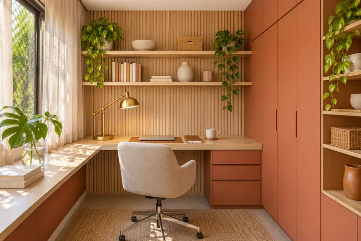

Da parede
ao projeto.
Um caderno para registrar o que você já sabe sobre o espaço. Se faltar uma medida, deixe em aberto e leve a dúvida para a visita.
Montar briefing
Briefing de teste
- Protocolo
- Ambiente
- Medidas
- Acabamento
- Etapa
Em um atendimento real, a marcenaria conferiria as medidas no imóvel antes de definir a fabricação.

Uma medida não conta tudo.
O uso, as instalações e o acesso à montagem também entram no projeto. O briefing ajuda a preparar essa primeira conversa.